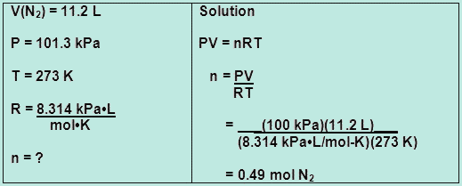
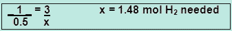
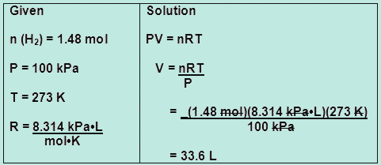

SCH3U: Chemistry, Grade 11, University Preparation
Unit 5: Gases and Atmospheric Chemistry
Activity 3: Gas Everywhere
Answer

|
|
|---|

|
1. Your first step is to calculate the number of moles of nitrogen gas given its information in the question.  2. Your second step is to find the number of moles of hydrogen gas needed by comparing the mole to mole ratio between nitrogen gas and hydrogen gas. Let x represent the number of moles of hydrogen gas needed for the reaction. Solve for x-  3. You are not finished. Hydrogen is a gas and the reaction occurred at certain temperature and conditions. You have found the moles (n) but you still need to calculate the volume. 
|
|---|
Close Window